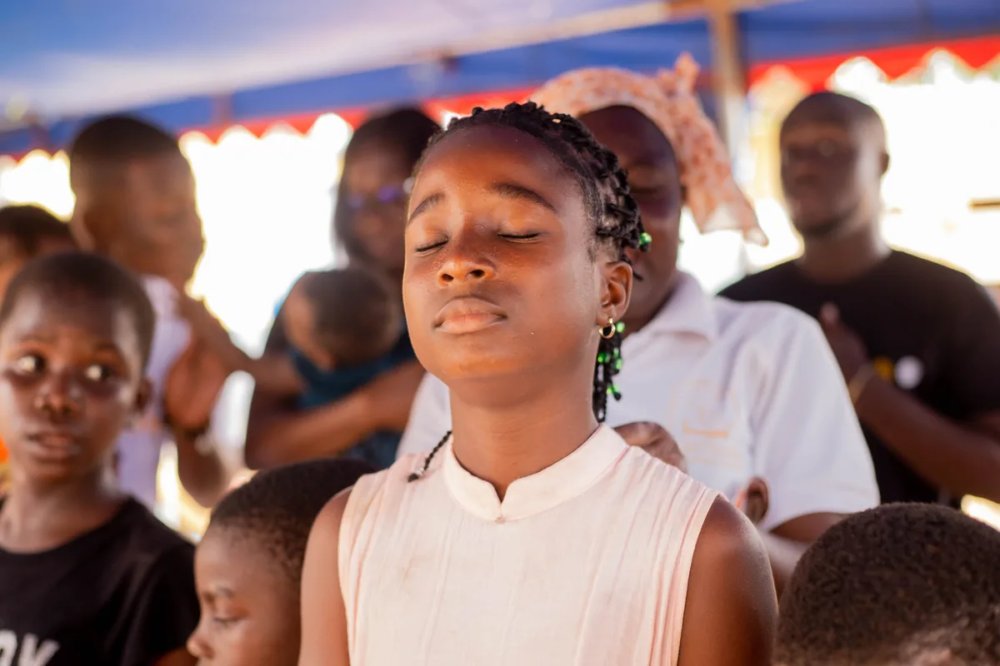
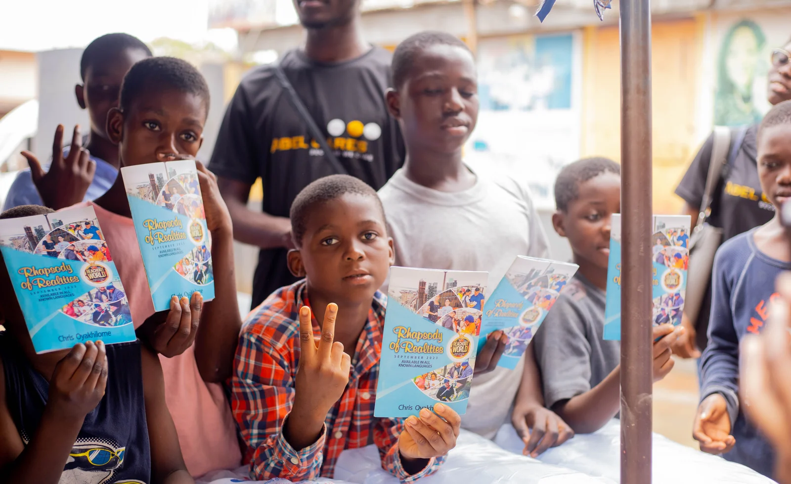
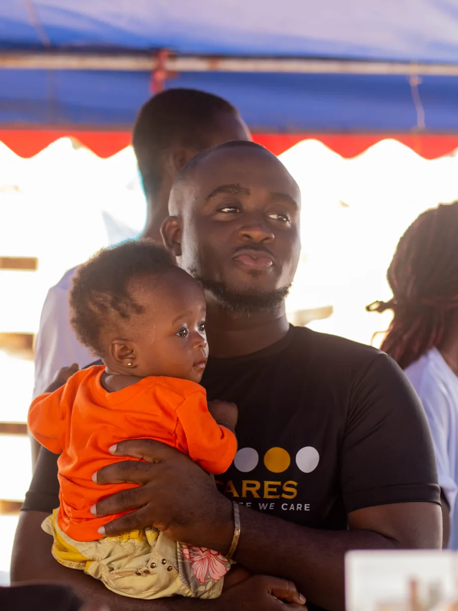

Our programs.
ACI Africa operates through three key divisions, each addressing a high-impact area of social development across Africa.

Education & Youth Development
We believe education is the foundation of African development. This division equips children and young people with tools, resources, and opportunities to thrive.
- Support a Schoolchild Project An educational support program providing students in rural, underserved areas with essential learning materials, mentorship, encouragement and school support for underserved children.
- The Entrepreneurial Mindset Program (EMP) A youth training and development initiative focused on mindset, innovation, opportunity creation, business psychology, and leadership.
- Digital Futures Ghana (Youth Tech Program) Preparing young Africans for the digital age through AI literacy, digital skills training, personal branding, and digital transformation workshops.
- Pan-African Leadership Blueprint Summit A continental leadership development platform designed to raise visionary, ethical, and purpose-driven African leaders.
- EmpowerTalks Africa A previous youth empowerment and motivational program that impacted thousands through mentorship, speaking events, and community engagement.


Mental Health & Social Psychology
ACI Africa is committed to promoting awareness, advocacy, and access to mental health support across Africa.
PAMHO — Pan-African Mental Health Organization
A continental flagship program under ACI Africa focused on mental health advocacy and awareness, research-based education, campaigns and community outreach, conferences, summits, forums, and conversations, and emotional well-being programs.
Flagship convening events
- The Man-to-Man Mental Health Summit: Addressing mental health awareness, emotional resilience, and support for men.
- Mental Health Conversations Series: Facilitated community, campus, and public forums on psychological well-being.
- Pan-African Mental Health Summit / Forum: Continental gathering bringing together practitioners, youth leaders, and caregivers.
- AbleKids Mental Health Program Supporting Special Needs children, adolescents and young adults with psychoeducation, emotional intelligence development, and wellness initiatives.
- Training & Capacity Building Workshops for youth, caregivers, teachers, first responders, and community leaders.
Climate, Sanitation & Social Impact
This division advances environmental health, sanitation, sustainability, and community well-being.
- Reaching the Unreached Project Extending essential health, sanitation, social interventions, and educational outreach to remote, underserved communities.
- Environmental & Sanitation Campaigns Community-based sanitation exercises, waste awareness campaigns, hygiene education, and sustainable ecological stewardship.
- Community Development Projects Grassroots youth and community-led initiatives addressing localized infrastructure and social needs.
